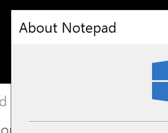

#
CSS

Cascading Style Sheets (CSS) is a language used most often to style and improve upon the appearance of views. It allows for the separation of presentation and content, and includes the characteristics of layouts, colors and fonts. CSS builds upon HTML to make webpages more interactive and appealing to the user.
Here are 50,784 public repositories matching this topic...
lutzroeder
commented
Feb 8, 2020
Is there a way to hide the icon of a BrowserWindow on Windows?
Expected:

Actual:
<img width="68" alt="Screen Shot 2020-02-08 at 11 27 35 AM" src="https://user-images.githubusercontent.com/438516/74090907-194fc800-4a
Open
Set Guidelines
1
eltonmesquita
commented
Jan 17, 2019
Related to #902, we also should provide some guidelines for Contributing and templates for Issues and Pull request.
8
thelfensdrfer
commented
Feb 6, 2020
Describe the bug
For yarn 2 there is a new config format, .yarnrc.yml (https://next.yarnpkg.com/configuration/yarnrc),
To Reproduce
Install yarn 2.
Expected behavior
Include what you have to insert in your config file in the docs.
Bug report checklist
- I have filled out as much of the above information as I can
- I have included a test case because my odds
A professional front-end template for building fast, robust, and adaptable web apps or sites.
-
Updated
Mar 29, 2020 - JavaScript
jbeeko
commented
Feb 28, 2020
kylejrp
commented
Aug 1, 2019
The Head section says:
The next 2 meta tags (Charset and Viewport) need to come first in the head.
I found a reference for Charset being early on in the head:
https://developer.mozilla.org/en-US/docs/Web/HTML/Element/meta
The
<meta>element declaring the encoding must be inside the<head>element and within the first 1024 bytes of the HTML as some browsers only look at those bytes be
tomyo
commented
Mar 25, 2020
I had to google around to actually find the import statement needed to use this:
import 'normalize.css'; // In my case, when using React
I think something like this should be included in the readme, at least for the non experienced npm users.
PS: seems [I'm not alone](https://stackoverflow.com/questions/42119878/how-to-use-normalize-css-using-npm-install-with-webpack/42245854#42245
pere
commented
Oct 22, 2019
Hi, I have been spending quite sometime wondering why a simple dropdown was not working.
Is not specified on the docs that the must have the class 'dropdown-trigger' (any other is not triggering the dropdown!)
Just a matter of documentation but crucial in order not to waste time :.)
example, this will not work:
<a class='dropdown-button-example btn' href='#' data-target='dropdo
soullivaneuh
commented
Mar 20, 2020
Banou26
commented
Feb 19, 2020
🐛 bug report
https://github.com/Banou26/parcel2-transformer-raw-bug
When using this configuration as per parcel-bundler/parcel#1080 (comment) and parcel-bundler/parcel#501 (comment)
.parcelrc
{
"extends": "@parcel/config-default",
"transforms": {
"url:*": ["@parcel/transformer-raw"]
}
zeilen
commented
Feb 5, 2020
sidhuko
commented
May 2, 2019
Environment
System:
- OS: macOS Mojave 10.14.4
- CPU: (4) x64 Intel(R) Core(TM) i5-5287U CPU @ 2.90GHz
- Memory: 281.36 MB / 16.00 GB
- Shell: 5.3 - /bin/zsh
Binaries:
- Node: 10.15.3 - ~/.nvm/versions/node/v10.15.3/bin/node
- Yarn: 1.15.2 - /usr/local/bin/yarn
- npm: 6.9.0 - ~/.nvm/versions/node/v10.15.3/bin/npm## Reproduction
Steps to repro
rodchen-king
commented
Dec 2, 2019
🧐 问题描述
[问题]如何修改区块获取的资源路径，想使用公司自己的github?哪里有相关介绍吗？
目前指向：https://gitee.com/ant-design/ant-design-blocks/
🚑 其他信息
Open
文档缺少可操作性
5
Troy-Yang
commented
Dec 2, 2019
function Child() {
Parent.call(this);
this.name = 'child';
}
Child.prototype = Parent.prototype;
Child.prototype.constructor = Child;
I think the line Child.prototype = Parent.prototype should be Child.prototype = Object.create(Parent.prototype);
Dante-dan
commented
Nov 14, 2019
Environment
Vue 2.5.22
Reproduction link
https://jsfiddle.net/ckbq21uL/7/
Steps to reproduce
- click the change clearable button.
- close button will disappear.
- but we can also clear value in panel when type is equal to datetime
What is expected?
clearable means we can or cann't clear this value.
so we shouldn't show clear
A collection of CSS3 powered hover effects to be applied to links, buttons, logos, SVG, featured images and so on. Easily apply to your own elements, modify or just use for inspiration. Available in CSS, Sass, and LESS.
-
Updated
Nov 27, 2019 - CSS
StephenEsser
commented
Oct 25, 2019
Issue
When using postcss v7.0.20 the webpack compilation fails with the following stack trace.
✖ ｢wdm｣: TypeError: Cannot read property 'value' of undefined
at /Users/username/workspaces/terra/terra-core/9.css:220:3
at new Quoted (/Users/username/workspaces/terra/terra-core/node_modules/postcss-values-parser/lib/nodes/Quoted.js:19:28)
at cloneNode (/Users/username/works
8
2
soullivaneuh
commented
Feb 9, 2020
Basically, the same thing than that: https://tailwindcss.com/docs/max-width/#app
But for height.
I might add it on a tailwindcss config file, but I'm working on an open-source svelte library based on Tailwind, and I would keep the strict default config to be flexible.
This will be useful to set the max height of a dropdown. Currently, I have to do this:
.list {
max-height: 1
Open
Dev: need fix navbar
3
inexist3nce
commented
May 24, 2015
The responsive menu at http://purecss.io/layouts/tucked-menu-vertical/ does not adjust height as one would expect.
When viewing in a screen smaller than 768px, the "responsive" menu has a fixed height that could potentially cause issues with long menus (or in really small screens with wrapping text).
This can be fixed by replacing the hardcoded height: 14em; at line 69 with height: auto;.
Animate elements as they scroll into view.
-
Updated
Mar 16, 2020 - JavaScript
erkanarslan
commented
Mar 5, 2020
Environment
Provide version numbers for the following components (information can be retrieved by running tns info in your project folder or by inspecting the package.json of the project):
- CLI: 6.2.2
- Cross-platform modules: 6.0.1
- Android Runtime: 6.2.0
- iOS Runtime: 6.2.0
- Plugin(s): unrelated
Describe the bug
openFile method of utils module does not preview the
denis-g
commented
Dec 4, 2019
NodeJs v10.15.2
NPM v6.13.1
I'm testing postcss with autoprefixer, and also gulp-autoprefixer.
browserslist setting is default.
Source scss:
body {
appearance: none;
user-select: none;
}
@-moz-document domain('example.com') {
body {
appearance: none;
user-select: none;
}
}Output css:
body {
-webkit-appearan我是木易杨，公众号「高级前端进阶」作者，每天搞定一道前端大厂面试题，祝大家天天进步，一年后会看到不一样的自己。
-
Updated
Jan 25, 2020 - JavaScript
Hocoh
commented
Jan 26, 2019
sjkummer
commented
Mar 26, 2020
I don't think anyone should actually use the current version in production:
npm audit: found 21 vulnerabilities (3 low, 10 moderate, 8 high) in 2340 scanned packages
yang8866love
commented
Oct 10, 2019
飞冰物料web3.0-组件-dynamic-icon文档跳转地址错误
BcRikko
commented
Jul 24, 2019
Is your feature request related to a problem? Please describe.
NES.css doesn't contain layout styles. This puts a burden on developers.
So I think it will be e
Created by Håkon Wium, Lie Bert Bos
Released December 17, 1996
- Website
- www.w3.org/Style/CSS/Overview.en.html
- Wikipedia
- Wikipedia
The hamburger menu button in v4 and upcoming v5 documentation on small screen lacks a visible focus indication (e.g. when navigating by keyboard)
![v4 header with hamburger menu button](https://user-images.githubusercontent.com/895831/77048035-b08d3100-6